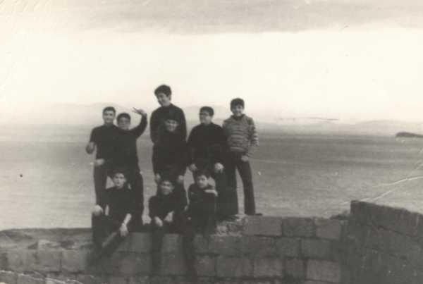

De izquierda a derecha: Tomás García; Ignacio Román Baldellón; Pedro Javier Rubio de Paco, detrás de éste Merino, al lado yo y seguido Montañés. Debajo, sentados los tres Carlos: Martínez Vara de Rey; Panea Sayalero y Serra Binimelis, en el Fuerte de San Carlos.
 |